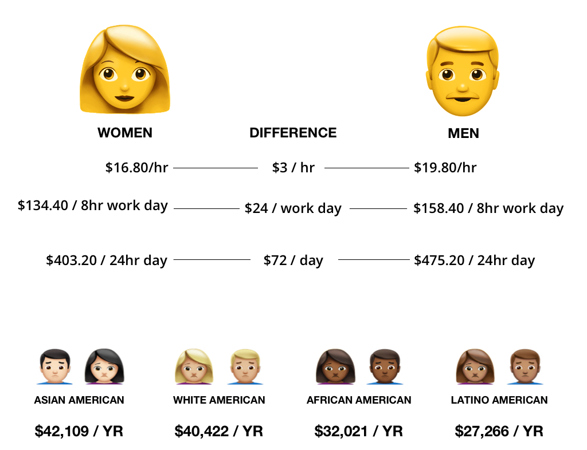
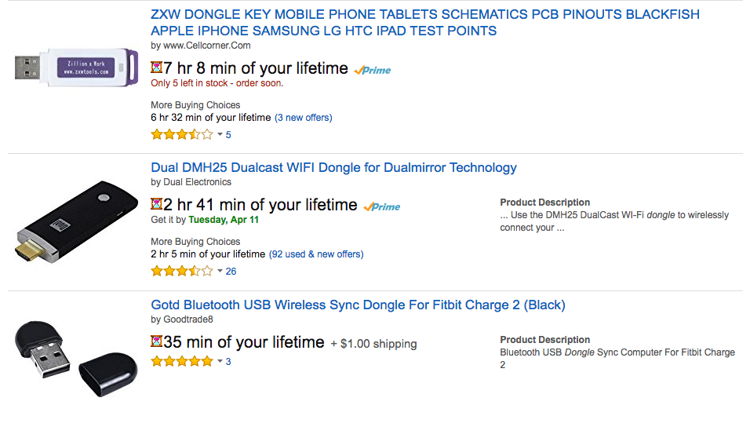
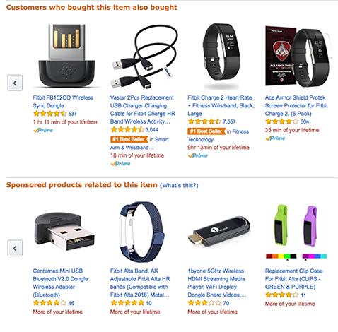
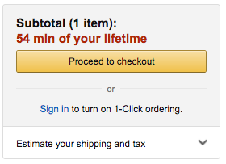

A tool for converting money into lifetime spent earning that money
View the Project on GitHub leslieruckman/existential-pricing
As consumers (or prosumers) we live in a world of continuous production and consumption – we must continuously work in order to continuously buy. Within this endless cycle, it's important to reflect on the relationship between your lifetime and your money. It's also important to know that people's lifetimes are valued differently.

Numbers cited from these Wikipedia stats.
In its current iteration, Existential Pricing is set to show you the lifetime spent by the average American Woman while shopping for goods on Amazon. Here are some screenshots of the results you might expect when searching for the key word "dongle."



I will continue to develop this to a point where it's ready to be released as a Chrome app. My hope is to allow users to input information about themselves and browse/shop in a way that is truly reflective of their lives. I also would like to enable people to try shopping as different people, for example from different countries, to get a sense of how others relate to money and time. Lastly, I would like this to convert prices on any website and I think there are clever ways to do this.
This project was created as a final project for Sam Lavigne's class called Detourning the Web.